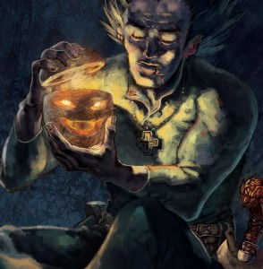
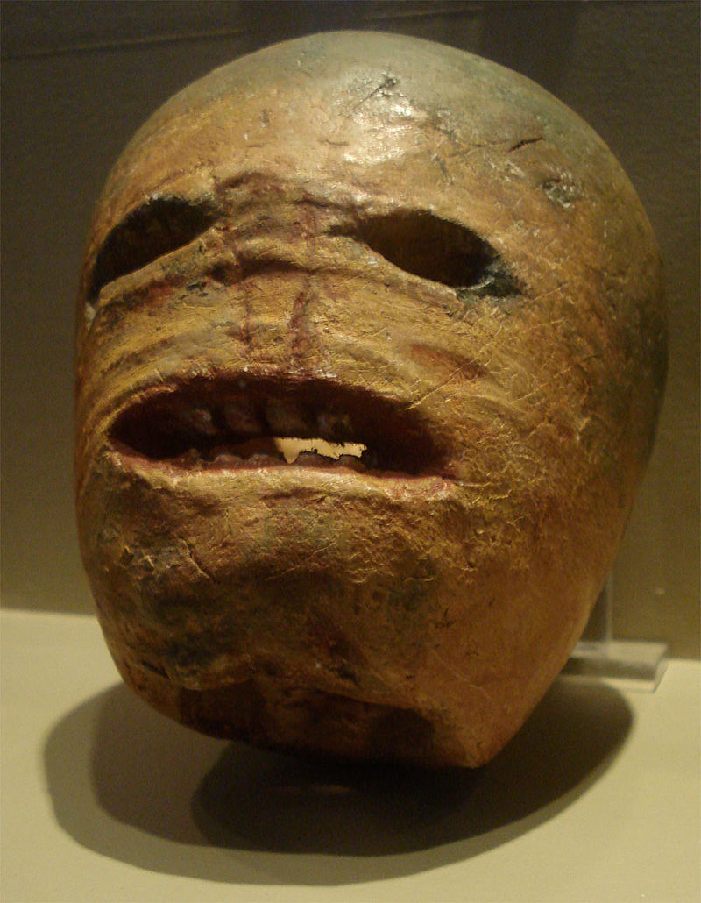

Dans le folklore
La citrouille est présente dans plusieurs histoires, dans le conte de Cendrillon par exemple. Mais une de ces histoires est plus importante que les autres puisque c'est elle qui explique l'utilisation la plus courante de la citrouille. Ce vieux conte d'origine irlandais est celui de Jack à la lanterne.
Jack O'Lantern
Jack était un maréchal-ferrant irlandais. Mais il était aussi un ivrogne égocentrique.
Un soir, alors qu'il rentrait chez lui, il bouscula le diable sur le bord du chemin. Celui-ci, comme il le faisait souvent, proposa à Jack d'échanger son âme. Jack accepta l'offre, mais
demanda au diable de lui payer un dernier verre avant qu'il ne prenne son âme. Le diable se changea en pièce de monnaie et tomba dans la main de Jack, qui déposa la pièce dans sa bourse.
Malheureusement pour le diable, la bourse contenait également un croix en argent. Pris au piège, il supplia Jack de le laisser partir. Jack libéra le diable avec comme condition qu'il ne vienne
pas chercher son âme avant 10 ans.
10 ans passèrent sans que Jack n'ai nouvelle du diable, comme promis. Mais un jour, le diable se présenta de nouveau devant lui pour récupérer son dû. Avant que le diable ne prenne son âme, Jack demanda à ce-dernier de lui cueuillir une pomme d'un arbre sur le bord du chemin. Pendant que le diable grimpa dans l'arbre, Jack pris son couteau et grava une croix dans le tronc du pommier. Pris au piège une deuxième fois, le diable promit à Jack de ne jamais prendre son âme s'il le laissait partir. Jack effaça la croix et le diable disparu.
Jack pu vivre en paix jusqu'à sa mort. Jack se fit interdire l'accès au paradis en raison de sa vie d'ivrogne, et sa promesse avec le diable l'empécha d'aller en enfers. Il fût donc condamner à errer dans le noir jusqu'au jour du jugement dernier. Avant de commencer sa marche, il ramassa et creusa un navet, et avec une dernière ruse, réussi à obtenir un charbon du diable, qu'il plaça dans le navet pour se créer une lanterne et éclairer son chemin.
C'est bien beau cette histoire mais elle parle de navet. C'est quoi le rapport avec les citrouilles?
Les irlandais avaient comme tradition de fabriquer des lanternes avec des navets le 31 octobre, le jour de la mort de Jack. Lors de la grande migration des irlandais pendant la grande dépression, ces derniers ont ammené avec eux leur culture. Dans leur nouvel environement américain, ils se sont mis à sculpter des citrouilles qu'ils pouvaient trouver sur place au lieu de navet. EN plus, les citrouilles sont plus facile à sculpter.